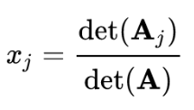
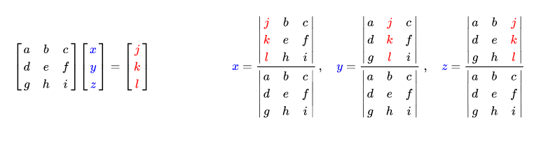
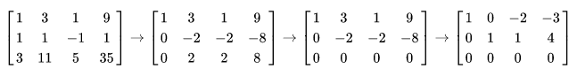
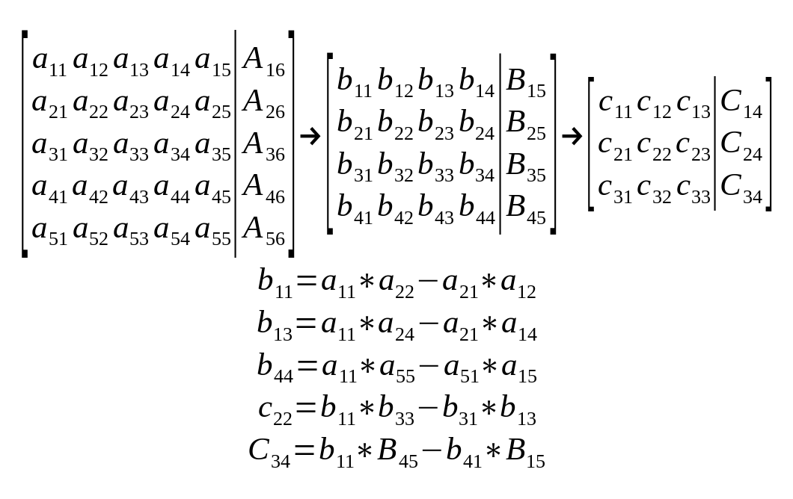
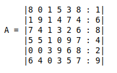

Como estudiante de ingeniería, mi mayor problema es el tiempo que demoro en resolver un sistema de ecuaciones de forma manual durante los exámenes, siendo que estos no son el punto de interés, sino que un paso obligatorio para encarar el verdadero problema.
En mi búsqueda de un método que acelere las cosas encontré tres que valen la pena mencionar:
Es un teorema del álgebra lineal que da la solución de un sistema lineal de ecuaciones en términos de determinantes. Recibe este nombre en honor a Gabriel Cramer (1704-1752), quien publicó la regla en su Introduction à l'analyse des lignes courbes algébriques de 1750.
La regla de Cramer es de importancia teórica porque da una expresión explícita para la solución del sistema. Sin embargo, para sistemas de ecuaciones lineales de más de tres ecuaciones su aplicación para la resolución del mismo resulta excesivamente costosa. Sin embargo, como no es necesario pivotar matrices, es más eficiente que la eliminación gaussiana para matrices pequeñas, particularmente cuando son usadas operaciones SIMD.
Sabiendo esto, ya puedo presuponer que no sera el mejor método para la resolución de mi sistema, pero voy a probarlo de todos modos para comparar realmente como se desarrolla.
Entonces, si Ax=b es un sistema de ecuaciones, A es la matriz de coeficientes del sistema, x=(x1, …, xn) es el vector columna de las incógnitas, y b es el vector columna de los términos independientes, entonces la solución al sistema se presenta así:

Donde Aj es la matriz resultante de reemplazar la j-ésima columna de A por el vector columna b. Hágase notar que para que el sistema sea compatible determinado, el determinante de la matriz A ha de ser no nulo.
Para obtener los determinantes en matrices mayores a 3x3 se utiliza el Desarrollo de Laplace para reducirlas, y una vez que se llega a un sistema 3x3 se utiliza la Regla de Sarrus.

Llamado así en honor de Carl Friedrich Gauss (1777-1855), es un algoritmo que se usa para transformar la matriz de un sistema de ecuaciones lineales a una matriz triangular superior mediante la reducción del sistema a otro equivalente en el que cada ecuación nueva tiene una incógnita menos que la anterior, para finalmente obtener las soluciones.
El método consiste en:
1- Ir al primer termino de la primer fila.
2- Si tiene un cero en esta columna, intercambiarlo con otra que no lo tenga.
3- Obtener ceros debajo de este elemento delantero, sumando múltiplos adecuados del renglón superior a los renglones debajo de él.
4- Pasar a la siguiente columna de la siguiente fila y repetir el proceso anterior con la submatriz restante.
5- Repetir con el resto de los renglones (en este punto la matriz se encuentra en forma escalonada)
Una vez obtenida la forma escalonada, se deduce que el ultimo valor de la parte ampliada es el resultado de la ultima incógnita. Con este valor se calcula hacia arriba las restantes incógnitas.

No he logrado encontrar información oficial sobre este método, por lo que no se cual es su verdadero nombre ni autor original; y por lo tanto, debe utilizarse a discreción. En mi opinión puedo decir que el método me ha funcionado correctamente en los años que llevo aplicándolo.
Este método fue publicado el 23 de Julio del 2016 en YouTube por el Ingeniero Mecatrónico Héctor Manual Vega, profesor de la Universidad de San Buenaventura, Colombia. video en YouTube
El método consiste, como el de Gauss, en una reducción de la matriz original, pero haciendo uso del calculo de determinantes. El proceso de cálculo toma como pivote al primer valor de la matriz (a11) el cual sera multiplicado por un valor que haya quedado dentro de la matriz reducida imaginaria (sin la fila a1j y columna ai1). A este valor se le resta el producto de a1j y ai1, donde i y j corresponden con el valor seleccionado dentro de la matriz imaginaria. Este resultado lo llamaremos bij. Al repetir este procedimiento con todos los valores de la matriz imaginaria, se formará una matriz equivalente de un grado menos. Esta reducción debe repetirse tantas veces como incógnitas tengamos. Al final obtendremos una ecuación simple de la que se despeja la ultima variable, y con esta podremos determinar las demás regresando por las matrices reducidas ya calculadas.

La idea ahora es comparar los pasos necesarios para resolver el sistema de ecuaciones con cada uno de los métodos, teniendo en cuenta también la forma tradicional. Para ello utilizare un sistema de seis ecuaciones con seis incógnitas, ya que es un sistema bastante habitual en mi día a día.
Matriz a utilizar como ejemplo:

8*x1+0*x2+1*x3+5*x4+3*x5+8*x6=1
1*x1+9*x2+1*x3+4*x4+7*x5+4*x6=6
7*x1+4*x2+1*x3+3*x4+2*x5+6*x6=8
5*x1+5*x2+1*x3+0*x4+9*x5+7*x6=4
0*x1+0*x2+3*x3+9*x4+6*x5+8*x6=2
6*x1+4*x2+0*x3+3*x4+5*x5+7*x6=9
8*x1+x3+5*x4+3*x5+8*x6=1
x1=1/8-1/8*x3-5/8*x4-3/8*x5-x6
x1+9*x2+x3+4*x4+7*x5+4*x6=6
1/8-1/8*x3-5/8*x4-3/8*x5-x6+9*x2+x3+4*x4+7*x5+4*x6=6
x2=47/72-7/72*x3-3/8*x4-53/72*x5-1/3*x6
7*x1+4*x2+x3+3*x4+2*x5+6*x6=8
7*(1/8-1/8*x3-5/8*x4-3/8*x5-x6)+4*(47/72-7/72*x3-3/8*x4-53/72*x5-1/3*x6)+x3+3*x4+2*x5+6*x6=8
x3=-325/19-207/19*x4-257/19*x5-168/19*x6
5*x1+5*x2+x3+9*x5+7*x6=4
5*(1/8-1/8*x3-5/8*x4-3/8*x5-x6)+5*(47/72-7/72*x3-3/8*x4-53/72*x5-1/3*x6)-325/19-207/19*x4-257/19*x5-168/19*x6+9*x5+7*x6=4
5*(1/8-1/8*(-325/19-207/19*x4-257/19*x5-168/19*x6)-5/8*x4-3/8*x5-x6)+5*(47/72-7/72*(-325/19-207/19*x4-257/19*x5-168/19*x6)-3/8*x4-53/72*x5-1/3*x6)-325/19-207/19*x4-257/19*x5-168/19*x6+9*x5+7*x6=4
x4=17/36+47/36*x5+25/72*x6
3*x3+9*x4+6*x5+8*x6=2
3*(-325/19-207/19*x4-257/19*x5-168/19*x6)+9*(17/36+47/36*x5+25/72*x6)+6*x5+8*x6=2
3*(-325/19-207/19*(17/36+47/36*x5+25/72*x6)-257/19*x5-168/19*x6)+9*(17/36+47/36*x5+25/72*x6)+6*x5+8*x6=2
x5=-129/131-107/262*x6
6*x1+4*x2+3*x4+5*x5+7*x6=9
6*(1/8-1/8*x3-5/8*x4-3/8*x5-x6)+4*(47/72-7/72*x3-3/8*x4-53/72*x5-1/3*x6)+3*(17/36+47/36*x5+25/72*x6)+5*(-129/131-107/262*x6)+7*x6=9
6*(1/8-1/8*(-325/19-207/19*x4-257/19*x5-168/19*x6)-5/8*(17/36+47/36*x5+25/72*x6)-3/8*(-129/131-107/262*x6)-x6)+4*(47/72-7/72*(-325/19-207/19*x4-257/19*x5-168/19*x6)-3/8*(17/36+47/36*x5+25/72*x6)-53/72*(-129/131-107/262*x6)-1/3*x6)+3*(17/36+47/36*x5+25/72*x6)+5*(-129/131-107/262*x6)+7*x6=9
6*(1/8-1/8*(-325/19-207/19*(17/36+47/36*x5+25/72*x6)-257/19*(-129/131-107/262*x6)-168/19*x6)-5/8*(17/36+47/36*(-129/131-107/262*x6)+25/72*x6)-3/8*(-129/131-107/262*x6)-x6)+4*(47/72-7/72*(-325/19-207/19*(17/36+47/36*x5+25/72*x6)-257/19*(-129/131-107/262*x6)-168/19*x6)-3/8*(17/36+47/36*(-129/131-107/262*x6)+25/72*x6)-53/72*(-129/131-107/262*x6)-1/3*x6)+3*(17/36+47/36*(-129/131-107/262*x6)+25/72*x6)+5*(-129/131-107/262*x6)+7*x6=9
6*(1/8-1/8*(-325/19-207/19*(17/36+47/36*(-129/131-107/262*x6)+25/72*x6)-257/19*(-129/131-107/262*x6)-168/19*x6)-5/8*(17/36+47/36*(-129/131-107/262*x6)+25/72*x6)-3/8*(-129/131-107/262*x6)-x6)+4*(47/72-7/72*(-325/19-207/19*(17/36+47/36*(-129/131-107/262*x6)+25/72*x6)-257/19*(-129/131-107/262*x6)-168/19*x6)-3/8*(17/36+47/36*(-129/131-107/262*x6)+25/72*x6)-53/72*(-129/131-107/262*x6)-1/3*x6)+3*(17/36+47/36*(-129/131-107/262*x6)+25/72*x6)+5*(-129/131-107/262*x6)+7*x6=9
x6=5,7452
x5=-129/131-107/262*5,7452 --> x5=-3,3311
x4=17/36-47/36*3,3311+25/72*5,7452 --> x4=-1,8819
x3=-325/19+207/19*1,8819+257/19*3,3311-168/19*5,7452 --> x3=-2,3446
x2=47/72+7/72*2,3446+3/8*1,8819+53/72*3,3311-1/3*5,7452 --> x2=2,1234
x1=1/8+1/8*2,3446+5/8*1,8819+3/8*3,3311-5,7452 --> x1=-2,9018
TIEMPO TOTAL: 114 MINUTOS
Resultados obtenidos por MatLab:
x1 = -2,902
x2 = 2,124
x3 = -2,346
x4 = -1,882
x5 = -3,331
x6 = 5,745
Resultados del método tradicional y el error asociado:
x1 = -2,9018 - e% = 0,007%
x2 = 2,1234 - e% = 0,028%
x3 = -2,3446 - e% = 0,059%
x4 = -1,8819 - e% = 0,005%
x5 = -3,3311 - e% = 0,003%
x6 = 5,7452 - e% = 0,003%
|8 0 1 5 3 8| |1|
|1 9 1 4 7 4| |6|
A=|7 4 1 3 2 6| b=|8|
|5 5 1 0 9 7| |4|
--> |0 0 3 9 6 8| |2|
|6 4 0 3 5 7| |9|
Laplace
|8 0 5 3 8| |8 0 1 3 8| |8 0 1 5 8| |8 0 1 5 3|
|1 9 4 7 4| |1 9 1 7 4| |1 9 1 4 4| |1 9 1 4 7|
det(A)=3*(-1)^(5+3)*|7 4 3 2 6|+9*(-1)^(5+4)*|7 4 1 2 6|+6*(-1)^(5+5)*|7 4 1 3 6|+8*(-1)^(5+6)*|7 4 1 3 2|=
|5 5 0 9 7| |5 5 1 9 7| |5 5 1 0 7| |5 5 1 0 9|
|6 4 3 5 7| |6 4 0 5 7| |6 4 0 3 7| |6 4 0 3 5|
A1 A2 A3 A4
--> |8 0 5 3 8|
|1 9 4 7 4|
A1=|7 4 3 2 6|
|5 5 0 9 7|
|6 4 3 5 7|
Laplace
|9 4 7 4| |1 9 7 4| |1 9 4 4| |1 9 4 7|
det(A1)=8*(-1)^(1+1)*|4 3 2 6|+5*(-1)^(1+3)*|7 4 2 6|+3*(-1)^(1+4)*|7 4 3 6|+8*(-1)^(1+5)*|7 4 3 2|=
|5 0 9 7| |5 5 9 7| |5 5 0 7| |5 5 0 9|
|4 3 5 7| |6 4 5 7| |6 4 3 7| |6 4 3 5|
A11 A12 A13 A14
|9 4 7 4|
A11=|4 3 2 6|
--> |5 0 9 7|
|4 3 5 7|
Laplace
|4 7 4| |9 4 4| |9 4 7|
det(A11)=5*(-1)^(3+1)*|3 2 6|+9*(-1)^(3+3)*|4 3 6|+7*(-1)^(3+4)*|4 3 2|=
|3 5 7| |4 3 7| |4 3 5|
aplicando Sarrus
det(A11)=5*(-1)^(3+1)*(4*2*7+7*6*3+4*3*5-4*6*5-7*3*7-4*2*3)+9*(-1)^(3+3)*(9*3*7+4*6*4+4*4*3-9*6*3-4*4*7-4*3*4)+7*(-1)^(3+4)*(9*3*5+4*2*4+7*4*3-9*2*3-4*4*5-7*3*4)=
det(A11)=-377
TIEMPO HASTA ESTE PUNTO: 52 MINUTOS
TIEMPO ESTIMADO PARA OBTENER PRIMER DETERMINANTE: 298 MINUTOS
TIEMPO ESTIMADO TOTAL (siete determinantes necesarios): 2086 MINUTOS (30 horas aproximadamente)
|8 0 1 5 3 8 : 1|
|1 9 1 4 7 4 : 6|
|7 4 1 3 2 6 : 8|
|5 5 1 0 9 7 : 4|
|0 0 3 9 6 8 : 2|
|6 4 0 3 5 7 : 9|
|1,000 0,000 0,125 0,625 0,375 1,000 : 0,125|
|0,000 9,000 0,875 3,375 6,625 3,000 : 5,875|
|0,000 4,000 0,125 -1,375 -0,625 -1,000 : 7,125|
|0,000 5,000 0,375 -3,125 7,125 2,000 : 3,375|
|0,000 0,000 3,000 9,000 6,000 8,000 : 2,000|
|0,000 4,000 -0,750 -0,750 2,750 1,000 : 8,250|
|1,000 0,000 0,125 0,625 0,375 1,000 : 0,125|
|0,000 1,000 0,097 0,375 0,736 0,333 : 0,653|
|0,000 0,000 -0,263 -2,875 -3,569 -2,332 : 4,513|
|0,000 0,000 -0,110 -5,000 3,445 0,335 : 0,110|
|0,000 0,000 3,000 9,000 6,000 8,000 : 2,000|
|0,000 0,000 -1,138 -2,250 -0,194 -0,332 : 5,638|
|1,000 0,000 0,125 0,625 0,375 1,000 : 0,125|
|0,000 1,000 0,097 0,375 0,736 0,333 : 0,653|
|0,000 0,000 1,000 10,932 13,570 8,867 : -17,160|
|0,000 0,000 0,000 -3,797 4,938 1,310 : -1,778|
|0,000 0,000 0,000 -23,796 -34,710 -18,601 : 53,480|
|0,000 0,000 0,000 10,191 15,249 9,759 : -13,890|
|1,000 0,000 0,125 0,625 0,375 1,000 : 0,125|
|0,000 1,000 0,097 0,375 0,736 0,333 : 0,653|
|0,000 0,000 1,000 10,932 13,570 8,867 : -17,160|
|0,000 0,000 0,000 1,000 -1,301 -0,345 : 0,468|
|0,000 0,000 0,000 0,000 -65,669 -26,811 : 64,617|
|0,000 0,000 0,000 0,000 28,507 13,275 : -18,659|
|1,000 0,000 0,125 0,625 0,375 1,000 : 0,125|
|0,000 1,000 0,097 0,375 0,736 0,333 : 0,653|
|0,000 0,000 1,000 10,932 13,570 8,867 : -17,160|
|0,000 0,000 0,000 1,000 -1,301 -0,345 : 0,468|
|0,000 0,000 0,000 0,000 1,000 0,408 : -0,984|
|0,000 0,000 0,000 0,000 0,000 1,644 : 9,392|
|1,000 0,000 0,125 0,625 0,375 1,000 : 0,125|
|0,000 1,000 0,097 0,375 0,736 0,333 : 0,653|
|0,000 0,000 1,000 10,932 13,570 8,867 : -17,160|
|0,000 0,000 0,000 1,000 -1,301 -0,345 : 0,468|
|0,000 0,000 0,000 0,000 1,000 0,408 : -0,984|
|0,000 0,000 0,000 0,000 0,000 1,000 : 5,713|
x6 = 5,713
x5 = -0,984-0,408x6 --> x5 = -3,315
x4 = 0,468+0,345*x6+1,301*x5 --> x4 = -1,874
x3 = -17,160-8,867*x6-13,570*x5-10,932*x4 --> X3 = -2,346
x2 = 0,653-0,333*x6-0,736*x5-0,375*x4-0,097*x3 --> x2 = 2,121
x1 = 0,125-x6-0,375*x5-0,625*x4-0,125*x3 --> x1 = -2,880
TIEMPO TOTAL: 72 MINUTOS
Resultados obtenidos por MatLab:
x1 = -2,902
x2 = 2,124
x3 = -2,346
x4 = -1,882
x5 = -3,331
x6 = 5,745
Resultados del método de Gauss y el error asociado:
x1 = -2,9018 - e% = 0,758%
x2 = 2,1234 - e% = 0,141%
x3 = -2,3446 - e% = 0,000%
x4 = -1,8819 - e% = 0,425%
x5 = -3,3311 - e% = 0,480%
x6 = 5,7452 - e% = 0,557%
|8 0 1 5 3 8 : 1|
|1 9 1 4 7 4 : 6|
|7 4 1 3 2 6 : 8|
|5 5 1 0 9 7 : 4|
|0 0 3 9 6 8 : 2|
|6 4 0 3 5 7 : 9|
|72 7 27 53 24 : 47|
|32 1 -11 -5 -8 : 57|
|40 3 -25 57 16 : 27|
| 0 24 72 48 64 : 16|
|32 -6 -6 22 8 : 66|
|-152 -1656 -2056 -1344 : 2600|
| -64 -2880 1984 192 : 64|
|1728 5184 3456 4608 : 1152|
|-656 -1296 -112 -192 : 3248|
| 331776 -433152 -115200 : 156672|
|2073600 3027456 1622016 : -4667904|
|-889344 -1331712 -852480 : 1211904|
| 1,9026e12 7,7702e11 : -1,8736e12|
|-8,2705e11 -3,8528e11 : 5,4142e11|
|-9,0399e22 : -5,1926e23|
x6=-5,1926e23/-9,0399e22 --> x6 = 5,744
x5=(-1,8736e12-7,7702e11*x6)/1,9026e12 --> x5 = -3,331
x4=(156672+115200*x6+433152*x5)/331776 --> x4 = -1,882
x3=(2600+1344*x6+2056*x5+1656*x4)/(-152) --> x3 = -2,334
x2=(47-24*x6-53*x5-27*x4-7*x3)/72 --> x2 = 2,123
x1=(1-8*x6-3*x5-5*x4-x3)/8 --> x1 = -2,902
TIEMPO TOTAL: 48 MINUTOS
Resultados obtenidos por MatLab:
x1 = -2,902
x2 = 2,124
x3 = -2,346
x4 = -1,882
x5 = -3,331
x6 = 5,745
Resultados del método Vega y el error asociado:
x1 = -2,9018 - e% = 0,000%
x2 = 2,1234 - e% = 0,047%
x3 = -2,3446 - e% = 0,512%
x4 = -1,8819 - e% = 0,000%
x5 = -3,3311 - e% = 0,000%
x6 = 5,7452 - e% = 0,017%
----------------------------------------------------
Al poder resolver sistemas de ecuaciones de hasta 3 incognitas con mi calculadora puedo simplificar calculos ahorrando tiempo y reduciendo el error.
|8 0 1 5 3 8 : 1|
|1 9 1 4 7 4 : 6|
|7 4 1 3 2 6 : 8|
|5 5 1 0 9 7 : 4|
|0 0 3 9 6 8 : 2|
|6 4 0 3 5 7 : 9|
|72 7 27 53 24 : 47|
|32 1 -11 -5 -8 : 57|
|40 3 -25 57 16 : 27|
| 0 24 72 48 64 : 16|
|32 -6 -6 22 8 : 66|
|-152 -1656 -2056 -1344 : 2600|
| -64 -2880 1984 192 : 64|
|1728 5184 3456 4608 : 1152|
|-656 -1296 -112 -192 : 3248|
| 331776 -433152 -115200 : 156672|
|2073600 3027456 1622016 : -4667904|
|-889344 -1331712 -852480 : 1211904|
resolución sistema de ecuaciones con calculadora:
x4 = -1,882
x5 = -3,331
x6 = 5,745
retomo calculos manuales
x3=(2600+1344*x6+2056*x5+1656*x4)/(-152) --> x3 = -2,343
x2=(47-24*x6-53*x5-27*x4-7*x3)/72 --> x2 = 2,123
x1=(1-8*x6-3*x5-5*x4-1*x3)/8 --> x1 = -2,902
TIEMPO TOTAL: 39 MINUTOS
Resultados obtenidos por MatLab:
x1 = -2,902
x2 = 2,124
x3 = -2,346
x4 = -1,882
x5 = -3,331
x6 = 5,745
Resultados del método Vega + calculadora, y el error asociado:
x1 = -2,9018 - e% = 0,000%
x2 = 2,1234 - e% = 0,047%
x3 = -2,3446 - e% = 0,128%
x4 = -1,8819 - e% = 0,000%
x5 = -3,3311 - e% = 0,000%
x6 = 5,7452 - e% = 0,000%
Realizadas las resoluciones obtengo los siguientes datos:
-tradicional: 114 minutos
-regla de Cramer: 2086 minutos (valor estimado a partir de la resolución parcial)
-método de Gauss: 72 minutos
-método Vega: 48 minutos
Ya con los resultados, me sorprendió mucho ver lo lento que se vuelve la regla de Cramer para matrices mayores a 3x3, era mucho mas de lo que esperaba, por lo que abandone la resolución cuando llevaba aproximadamente 1/6 de la resolución del primer determinante a los 52 minutos; y siendo 7 los determinantes que tenia que resolver.
Por si les interesa como obtuve el tiempo estimativo fue de la siguiente manera:
22min(Laplace 5x5)+17min(Laplace 4x4)*6+13min(Laplace 3x3 + Sarrus)*24 = 436min/det
436min/det * 7det = 3052 minutos → aproximadamente 51 horas
Esto es lo que me llevaría resolver una matriz 6x6 completa por este método. Cabe señalar que en mi ejemplo aproveche la existencia de valores vacíos para reducir el tiempo de resolución a 298 minutos por determinante, dando como tiempo total los 2086 minutos descriptos arriba.
De forma tradicional fue lo esperado, resolví el ejercicio en 114min, fue un proceso largo y tedioso, donde hay que estar atento para no confundir ningún valor y signo.
Con el método de Gauss se ahorra mucho tiempo, es sencillo de llevar sin perderse y no genera mucho error (entorno al 0,4%).
Por ultimo, el método Vega. Lejos mi favorito de la lista, es de muy rápida resolución, es sencillo de llevar a cabo y prácticamente no introduce error (poco menos del 0,1%), sumado que durante el proceso genera matrices equivalentes con un grado menos por paso, dando la posibilidad de utilizar la resolución de ecuaciones de una calculadora científica simple al llegar a una matriz 3x3, logrando así mejorar el tiempo a 39 minutos y disminuyendo el error a 0,03%.
Si desean ver y revisar en detalle el paso a paso de las resoluciones, las mismas están disponibles para ver y descargar en el siguiente link. Junto a estos también se encuentra un pequeño programa en C hecho por mi que aplica el método Vega en matrices de hasta 10x10 mostrando el paso a paso.